Вариант 1
Приехать в ателье
- Новолесная, 5Москва
- Бесплатная парковкау ателье
- Пн–Сб 10:00–21:00Вс 10:00–19:00
- +7 (495) 725-05-64запись и вопросы
Мужчинам · Костюмы
Пн–Сб 10:00–21:00 · Вс 10:00–19:00
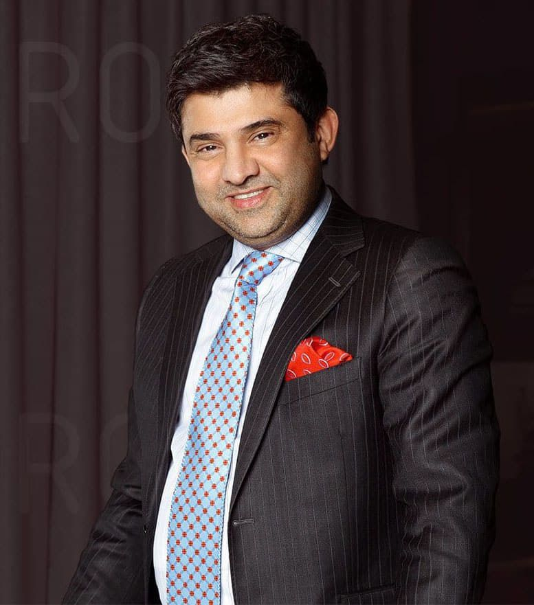
Почему VESTORO
Основатель ателье Джимми Котвани имеет более чем 30-летний опыт пошива одежды. За это время он собрал команду выдающихся портных, которые помогают ему осуществлять даже самую смелую идею заказчика.
С 1993 года мы обслужили более 35 000 клиентов, для которых создали одежду вручную по английской технологии Bespoke. Вы можете доверять нашему опыту.
Джимми Котваниоснователь VESTORO
Из чего складывается костюм
Настоящее качество костюма складывается из деталей, многие из которых незаметны с первого взгляда. Конструкция, ткань, подкладка, пуговицы, мастерство портных и точность посадки определяют, как костюм выглядит, ощущается и сохраняет форму спустя годы.
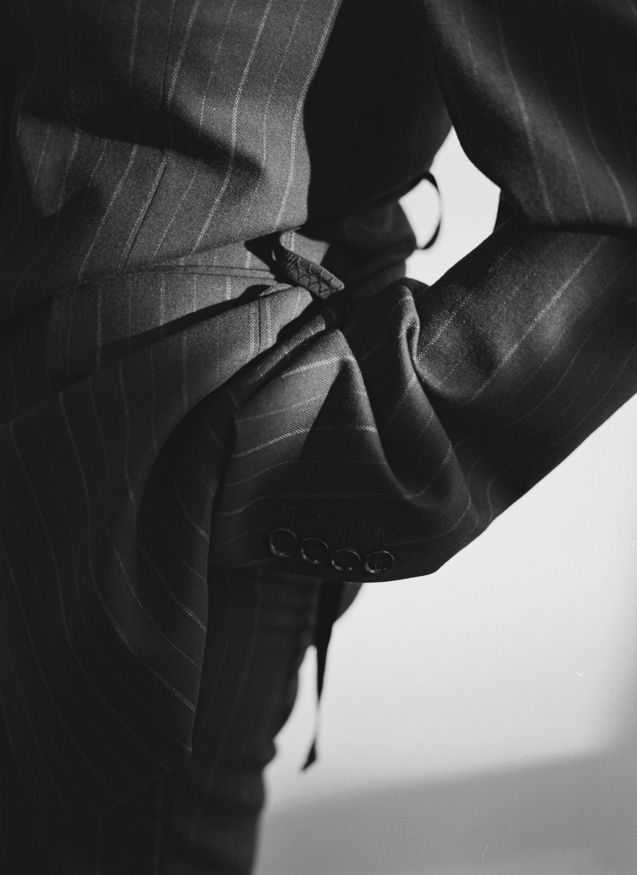
Самое важное в костюме часто скрыто внутри.
В VESTORO мы уделяем особое внимание внутренней конструкции пиджака. В костюмах с технологией Full Canvas используется полноценная бортовая прокладка из натуральных материалов, в том числе с применением конского волоса.
Такая конструкция традиционно используется в высококлассном английском портновском искусстве. Она позволяет пиджаку естественно повторять движения тела, формировать красивую линию груди и лацканов, лучше сохранять форму и со временем адаптироваться к фигуре владельца.
На рынке индивидуального пошива можно встретить костюмы по значительно более низким ценам. Однако внешне похожие изделия могут существенно отличаться внутренней конструкцией: от клеевой технологии до Half Canvas и Full Canvas.
Именно то, что находится внутри пиджака, во многом определяет его качество и долговечность.
VESTORO предлагает один из самых широких выборов тканей для индивидуального пошива, от классической шерсти на каждый день до эксклюзивных материалов для особых случаев.
Мы работаем с ведущими мировыми производителями:
В нашем ассортименте представлены ткани различного состава, плотности, переплетения и назначения: шерсть, кашемир, шёлк, лён и их сочетания.
Мы помогаем подобрать ткань не только по внешнему виду, но и по образу жизни клиента, сезону, частоте использования костюма и желаемой посадке.
Пуговицы кажутся незначительным элементом, однако именно они помогают завершить образ костюма.
В VESTORO доступен широкий выбор пуговиц различных форм, размеров, оттенков и материалов:
Мы подбираем пуговицы с учётом ткани, назначения костюма и предпочтений владельца. Можно выбрать незаметное классическое решение или сделать пуговицы выразительным акцентом.
Особое внимание уделяется сочетанию пуговиц пиджака и рукавов, а также цветов нитей для петель.
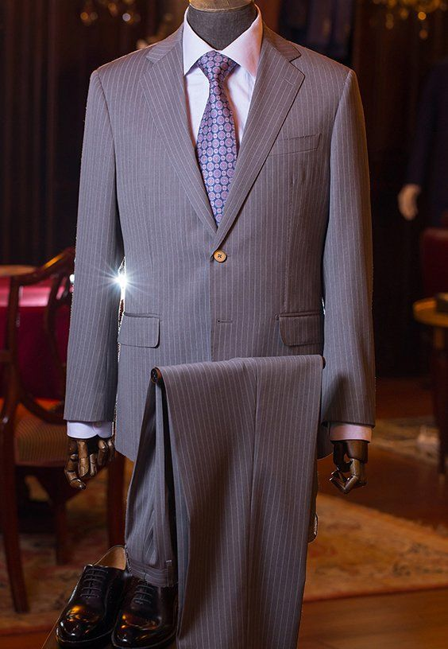
Подкладка влияет не только на внешний вид внутренней части пиджака, но и на комфорт при носке.
В VESTORO мы предлагаем широкий ассортимент подкладочных материалов, от сдержанных однотонных вариантов до ярких рисунков и необычных дизайнерских решений. Доступны различные материалы и составы в зависимости от коллекции:
Клиент может выбрать классическую подкладку в тон костюма или создать яркий внутренний акцент: геометрический орнамент, цветочный рисунок, необычный принт или контрастное сочетание оттенков.
Можно отдельно подобрать подкладку корпуса, рукавов и внутренних элементов пиджака с учётом доступных материалов и особенностей модели. Варианты без полной подкладки также могут использоваться для более лёгких и повседневных пиджаков.
Подкладка — возможность выразить индивидуальность даже в самом строгом деловом костюме.
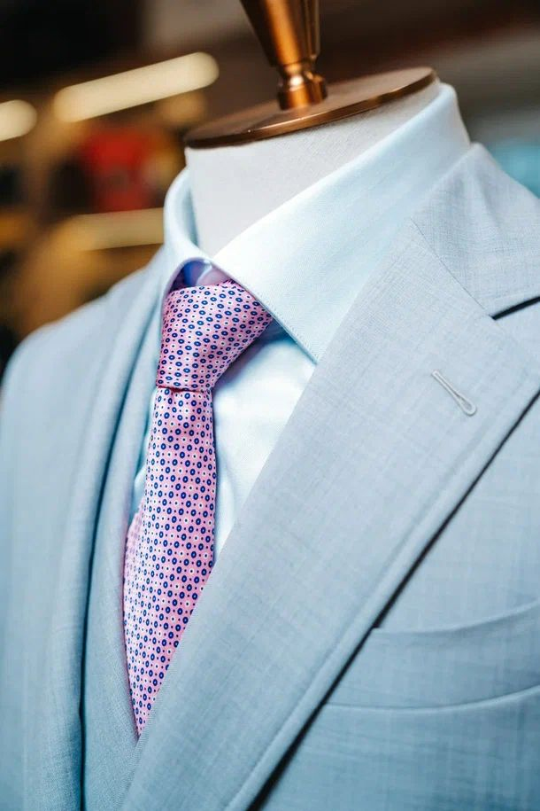
Стоимость костюма определяется не только материалами, но и сложностью его изготовления.
Особое внимание уделяется форме лацканов, качеству швов, обработке карманов, петель, краёв пиджака и внутренним деталям. В зависимости от выбранного уровня исполнения и модели могут использоваться:
Каждый элемент согласовывается с клиентом, чтобы готовый костюм соответствовал его стилю и пожеланиям.
Даже самая дорогая ткань не раскроет своих преимуществ, если костюм плохо сидит.
Индивидуальный пошив начинается с изучения фигуры, осанки, пропорций и привычек клиента. Мы учитываем ширину плеч, положение корпуса, особенности спины, длину рук, баланс изделия и множество других деталей.
Важную роль играют примерки и необходимые корректировки, которые помогают добиться гармоничного силуэта и свободы движений.
Клиент также выбирает элементы дизайна: форму лацканов, карманы, количество пуговиц, силуэт, ширину брюк и другие детали.
Результат — костюм, который создаётся под конкретного человека, а не под стандартный размер.
Английская технология с 1993 года
Bespoke — это не массовый пошив и не made-to-measure. Изделие делается полностью вручную с нуля: без стандартной основы и без адаптации готового размера. Одна основа принадлежит одному человеку.
Строится под вашу фигуру и сохраняется в системе VESTORO для следующих заказов
Борт, петли, посадка рукава, воротник. На лацкане — пять видов ручной миланской петли
Бортовка внутри пиджака. Клеевой дубляж не используется
Клетка и полоска сходятся на всех частях пиджака
Несколько каталогов пуговиц и самая большая коллекция подкладок
Если фигура изменится, бесплатно подгоним изделие в пределах двух размеров
Более 7 000 тканей
В ателье на ваш выбор доступно более 7 000 элитных тканей ведущих мировых домов. С 2000-х годов VESTORO — официальный партнёр производителей.
Мировыедома тканей
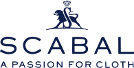
Bespoke
Полный процесс занимает от 4 до 6 недель
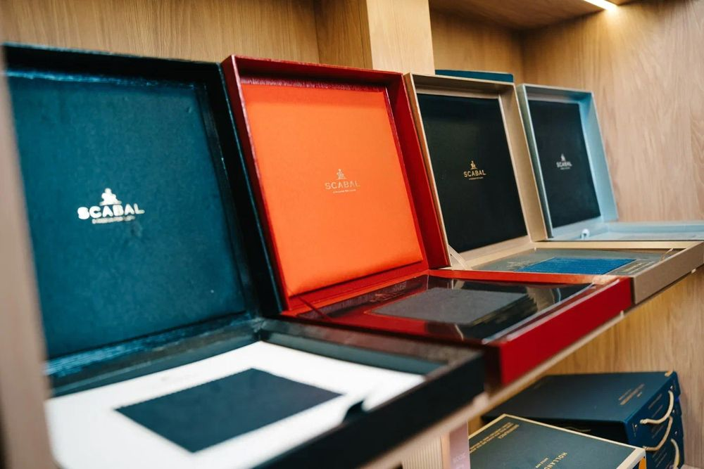
01Персональная консультация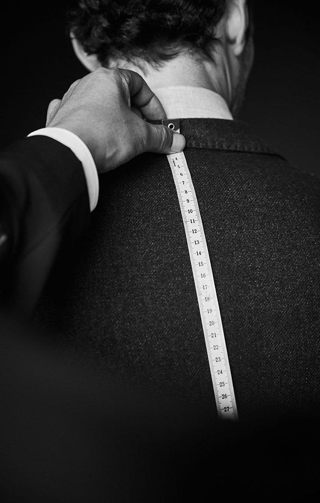
02Снятие индивидуальных мерок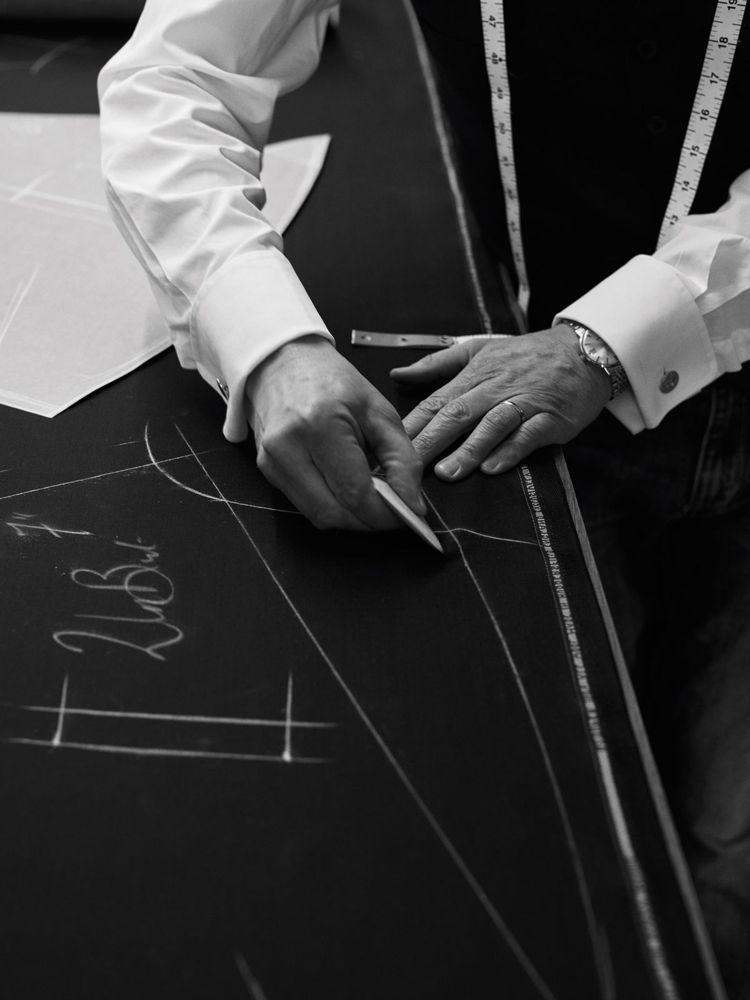
03Создание персонального лекала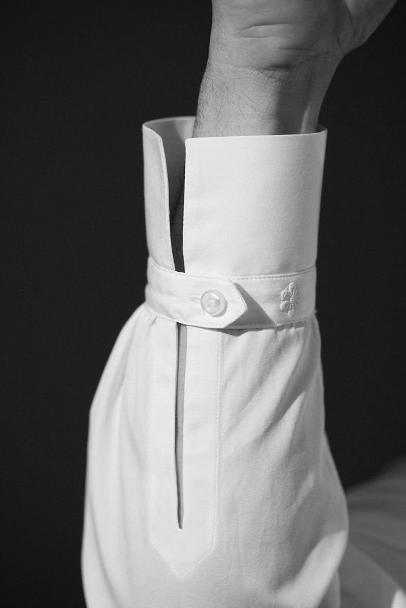
04Дополнительная проработка лекала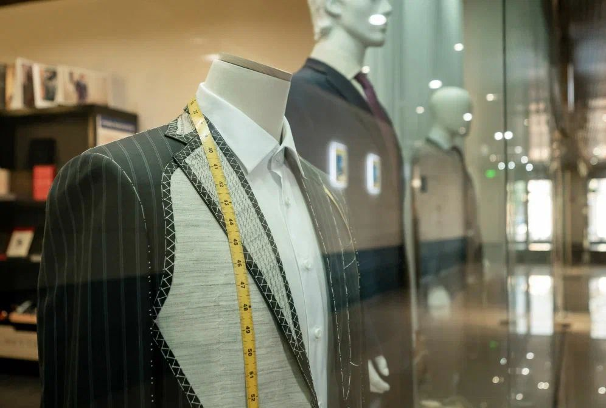
05Примерка пробного изделия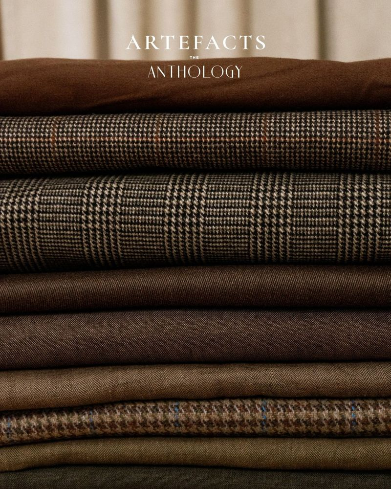
06Пошив в Италии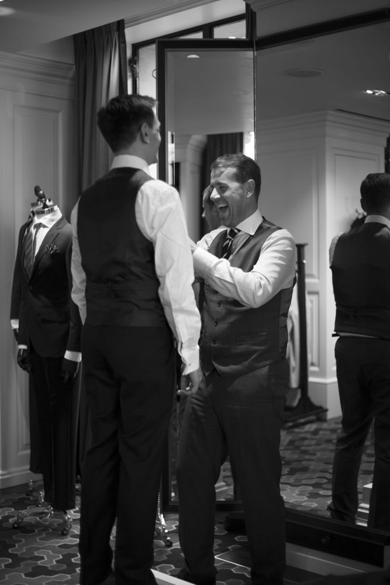
07Финальная примерка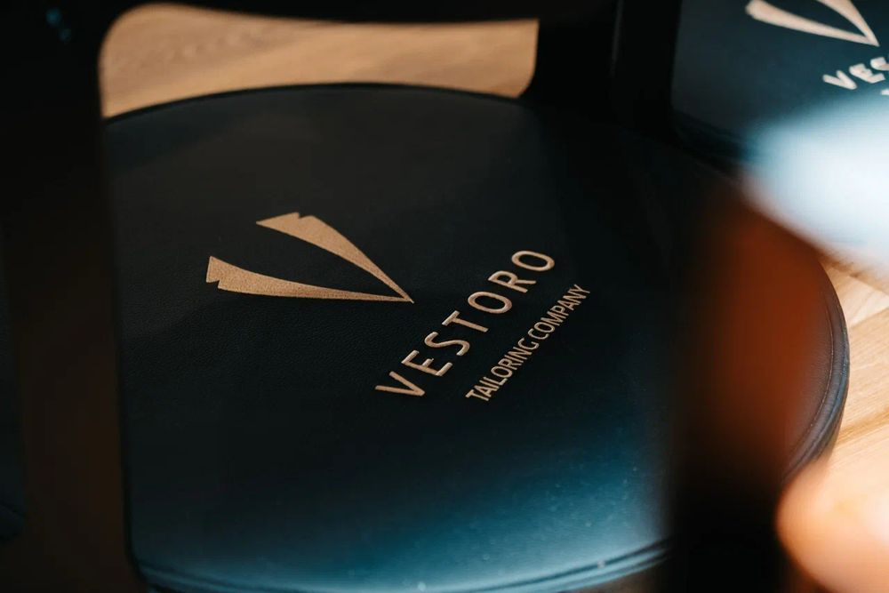
08Изделие готовоИзучаем гардероб, образ жизни и задачи будущего изделия. Помогаем определить силуэт, конструкцию и стиль, подобрать ткань, подкладку, пуговицы и детали.
Мастер учитывает не только пропорции тела, но и осанку, положение плеч, баланс фигуры и особенности движения.
Лекало создаётся исключительно для вашей фигуры. Не стандартная основа и не адаптация готового размера. Лекало и мерки сохраняются в системе VESTORO.
Индивидуальное бумажное лекало, по которому кроится изделие в Италии. При необходимости — рабочее лекало в Москве и пробное изделие из технической ткани.
Проверяем положение плеч и воротника, баланс, длину, объём, направление рукавов и свободу движения, вносим изменения в лекало.
Изделие шьётся по персональному лекалу с учётом особенностей фигуры и результатов примерки.
Проверяем посадку, баланс, длину и комфорт в движении. В 99% случаев дополнительная подгонка не требуется.
Забираете в ателье или получаете персональной доставкой.
Первый шаг
Вариант 1
Вариант 2
Персональная услуга для тех, кто ценит комфорт и индивидуальный подход
Условия
Наши работы
Отзывы
Шью в VESTORO больше десяти лет. Лекала хранятся, поэтому новый костюм — это выбор ткани и одна примерка.
Сентябрь 2026
Заказывал смокинг к семейному торжеству. Джимми сам вёл все примерки — посадка без единой складки.
Август 2026
Портной приехал в офис в удобное время и снял мерки за час. Через пять недель костюм был готов.
Июнь 2026
Раз в полгода привожу костюмы на осмотр: почистят, подправят посадку — и они снова как новые.
Апрель 2026
Прайс
Точную цену мы с клиентом оговариваем на первой встрече после обсуждения всех деталей и снятия мерок.
Полный процесс — от 4 до 6 недель: консультация, мерки, персональное лекало, примерка пробного костюма, пошив в Италии и финальная примерка.
Как правило, две: примерка пробного костюма, по итогам которой уточняется лекало, и финальная. В 99% случаев дополнительная подгонка не требуется.
В Full Canvas внутри пиджака — полноценная бортовая прокладка из натуральных материалов, в том числе с конским волосом. Пиджак повторяет движения тела, держит линию груди и лацканов и со временем подстраивается под фигуру. Клеевой дубляж мы не используем.
Шьём и двойку (пиджак и брюки), и тройку (жилет, пиджак и брюки). На консультации подскажем, что подойдёт под ваши задачи; от выбора зависит стоимость.
Общие вопросы
Да. Портной приедет к вам с образцами тканей, снимет мерки и поможет с выбором. По Москве выезд бесплатный при заказе от 50 000 ₽.
Раз в 6 месяцев — бесплатный технический осмотр: проверяем швы, конструкцию и посадку. Химчистка и мелкий ремонт — за наш счёт. Если фигура изменится, бесплатно подгоним изделие в пределах двух размеров.
Да. Персональное лекало и мерки хранятся в системе VESTORO и используются для следующих заказов.
Оставьте заявку на сайте, позвоните по телефону +7 (495) 725-05-64 или напишите в мессенджер — подберём удобное время.
VESTORO
Укажите свой email, чтобы получать эксклюзивные новости VESTORO.
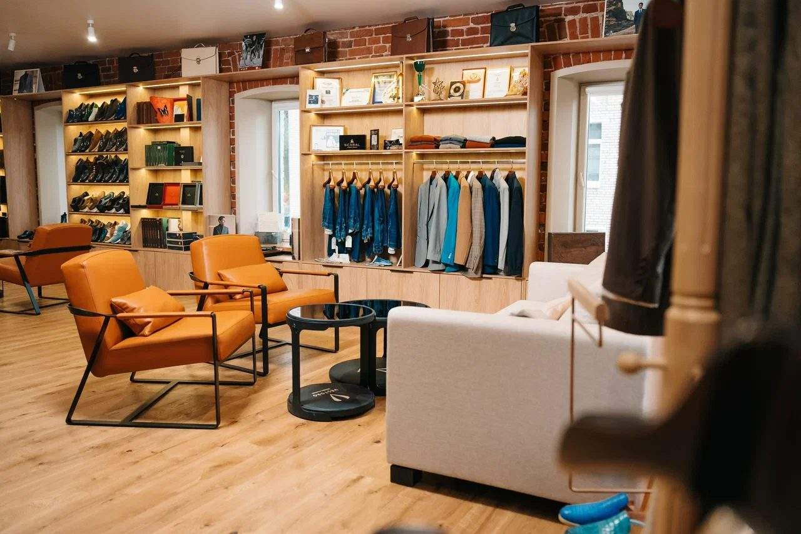
Визит в ателье
Москва, Новолесная 5 · бесплатная парковка · Пн–Сб 10:00–21:00, Вс 10:00–19:00 · +7 (495) 725-05-64
Мужской гардероб
Когда трудно определиться с выбором
Подарочный сертификат VESTORO — универсальный подарок, когда трудно определиться с выбором, а поздравить дорогого человека хочется. Обладатель сертификата сам определяет время визита и детали будущего изделия, наслаждаясь каждым этапом создания безупречного костюма.
Выбрать сертификат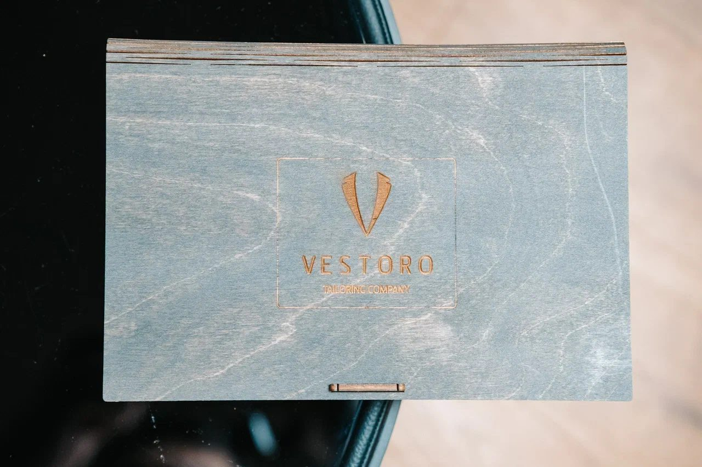
Контакты
Приглашаем в гости, обсудить ваш идеальный костюм
Ателье VESTORO шьёт мужские костюмы по индивидуальным меркам с 1993 года. Костюм создаётся по английской технологии Bespoke: персональное лекало, конструкция Full Canvas без клеевого дубляжа, ручной пошив в Италии и примерки до идеальной посадки.
На выбор — более 7 000 тканей Loro Piana, Ermenegildo Zegna, Scabal, Dormeuil, Holland & Sherry и других мировых домов, пуговицы из рога, перламутра и корозо, подкладка из вискозы, купро и шёлка. Каждый костюм — с пожизненной гарантией: техосмотр раз в 6 месяцев, химчистка и ремонт за наш счёт. Ателье — в Москве на Новолесной, 5, возможен выезд портного.